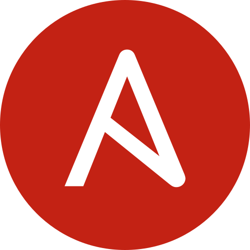
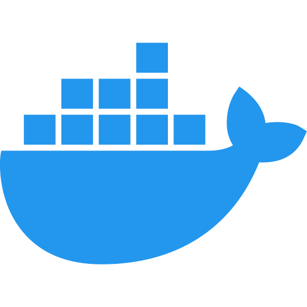
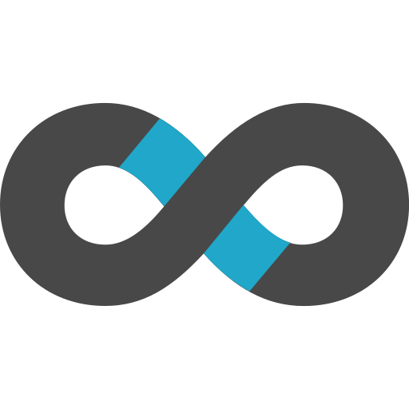
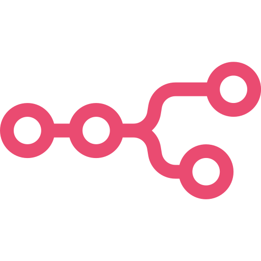
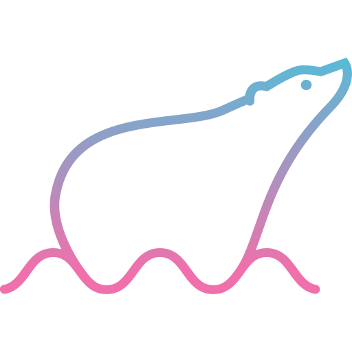

Enterprise Data & AI
at Home
A private cloud solution based on k8s running a production-grade lakehouse, autonomous agents, and full observability. It is assembled from open source and operated from Git in a home rack.
Standing on open source
The platform is assembled from battle-tested open source rather than one vendor, from the kernel to the dashboards. These are the foundations the rest of the site describes.
{kind=link}
{kind=link}
 Argo CD
Helm
Argo CD
Helm
{kind=link}
{kind=link}

Ansible Prometheus Grafana Loki PostgreSQL Valkey{kind=link}
{kind=link}
{kind=link}
{kind=link}
{kind=link}
{kind=link}

Docker Tailscale
Ollama
Garage
Longhorn
Tailscale
Ollama
Garage
Longhorn
{kind=link}
{kind=link}
{kind=link}
{kind=link}

Superset{kind=link}

n8n{kind=link}

PolarisFeatured work
Six of fourteen projects, each with a full case study behind it.

Platform
Cloud-at-home on mini-PCs
Seven mixed ARM64/AMD64 nodes assembled, provisioned, and operated entirely from Git.
Read the case study →
Data & Analytics
Lakehouse core stack
Iceberg on Garage, a Polaris catalog, Trino federation, dbt models, and Superset dashboards.
Read the case study →
Data & Analytics
Semantic layer for agents
One catalogued, versioned SQL surface that both dashboards and AI agents query.
Read the case study →
AI & Agents
MCP platform
Read-only MCP servers that give local agents verifiable facts without unrestricted access.
Read the case study →
AI & Agents
SRE agents (Sympozium)
Narrow, scheduled agents that investigate alerts and report with evidence, not guesswork.
Read the case study →
Application
Bodega shopping analytics
Supermarket invoices become a structured dataset and a weekly spend digest, with no rows published.
Read the case study →Power on the desk
Seven nodes you can touch: two architectures, three storage tiers, and a GPU node in one home rack. Every figure here traces back to the live cluster.
Enterprise practices, not a lab
Every discipline an enterprise expects, running on hardware you can touch.
Infrastructure as code
Ansible provisions the OS and K3s; Helmfile ApplicationSets describe the services. Nothing is set up by hand. Provisioning
GitOps delivery
ArgoCD continuously reconciles one Application per namespace, with server-side apply and auto-sync on every commit. Automation
CI/CD & governance
GitHub Actions gates every change and Renovate keeps dependencies current; all work lands through reviewed pull requests. Cost management favours local inference and free-tier models over per-token spend. CI/CD
Identity, secrets & access
Dex turns GitHub OAuth into OIDC for SSO, OAuth2-Proxy protects services, Tailscale gives zero-trust access, and secrets management uses Sealed Secrets mirrored by Reflector. Security
Observability & reliability
Prometheus, Loki, Grafana, AlertManager, and Robusta watch the estate; reliability and backups come from Longhorn replication, Velero, and Kopia. Monitoring
Data & AI platform
The data platform runs Garage, Iceberg, Polaris, and Trino, with streaming on Redpanda and orchestration through Airflow, dbt, and dlt; the AI platform runs local Ollama inference and Sympozium agents. Data Stack · AI
Experience is still the job
AI now writes much of the how. The work that remains is judgment: what to build, what to cut, and what to trust. This platform is where that judgment was practised.
Open-source vendor risk
“MinIO changed its license and removed the open-source images with very short notice. By the time the removal date was close, it became a forced, rushed migration.”
Local AI agents
“AI must enrich detection, not replace it.”
Scope and purpose
“Without a deliberate plan for what the homelab was for, it grew into an unmanageable web of services.”
What's next
Where the platform goes from here.
Authors
Who built this, and where to find the work.